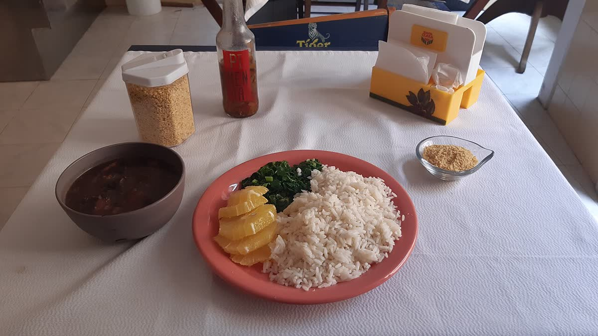

Culture
The music, the food and the week that stops the country.
Music
Samba came out of the working-class districts of Rio in the early twentieth century, carried there largely by families who had moved down from Bahia. “Pelo Telefone”, recorded in 1917, is usually named as the first samba put on record.
Bossa nova arrived forty years later and did the opposite: it took the same rhythm and made it quiet. João Gilberto’s Chega de Saudade in 1958 set the template, and by 1962 Tom Jobim and Vinícius de Moraes had written “Garota de Ipanema”, which went on to become one of the most recorded songs in the world.
What you will actually hear on the street depends entirely on where you are: forró in the north east, sertanejo inland, funk carioca in Rio.
Football
Brazil has won the men’s World Cup five times (1958, 1962, 1970, 1994 and 2002), more than any other country, and is the only nation to have played in every tournament.
If you can get to a league match, go. The Maracanã in Rio is the obvious one, but a smaller local derby will tell you more about the place.
Carnival
Carnival runs for the five days before Ash Wednesday, so the date moves with Easter and usually lands in February or March. It is a public holiday and most of the country genuinely stops.
In Rio the centrepiece is the samba school parade at the Sambadrome, a purpose-built parade ground designed by Oscar Niemeyer that opened in 1984. Each school gets roughly an hour to move several thousand performers and a line of floats past the judges, on a single theme it has been preparing all year.
Salvador and Recife run their own Carnivals, on completely different formats. In Salvador the crowd follows trucks with bands on top through the streets, rather than watching from a stand.
Video hosted on YouTube. Playing it will load content from YouTube.
Food
Feijoada is the dish everyone names first: black beans slow-cooked with cuts of pork, served with rice, farofa and sliced orange. It is heavy enough that it is traditionally eaten at lunch, and in many places only on Wednesdays and Saturdays.
Beyond that, the country splits by region. Pão de queijo, the small cheese breads, are from Minas Gerais. Moqueca, a coconut and palm-oil fish stew, is from Bahia and Espírito Santo, and the two states will tell you their version is the real one. Açaí in the north is served as a savoury side with fish, not as a sweetened breakfast bowl.
At a churrascaria, waiters bring cuts of meat to the table until you turn the marker on the table over. Turning it early is allowed.

A note on language
Brazil is the only country in the Americas where Portuguese is the official language, and outside the main tourist areas English is not widely spoken. Brazilian Portuguese also differs enough from European Portuguese in accent and vocabulary that a phrasebook for Portugal will only get you part of the way.
Five phrases cover a surprising amount of a first trip.
- Bom dia
- Good morning, and the normal way to greet anyone before midday
- Por favor
- Please
- Obrigado / obrigada
- Thank you. The ending changes with who is speaking, not who is thanked
- A conta, por favor
- The bill, please
- Você fala inglês?
- Do you speak English?